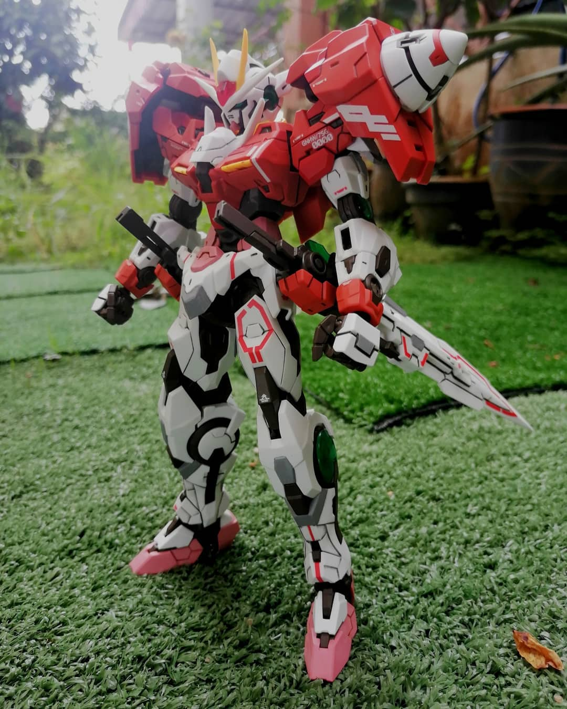

Here you can see some of pictures that I have taken. It's selected as the best pictures that I have taken so far.
You also can click the pictures to go to my Instagram and Facebook accounts!
A pictures of a Muslimah that I drew as part of my practice in realism drawing.

Here is my very first attempt on taking the realism until it become one of my major drawing style

Along with drawing, I'm also did some editing back then of pictures that inspires me.

But my recent hobby right now are doing model kits and toy photography.

And here is my recent build of model kit